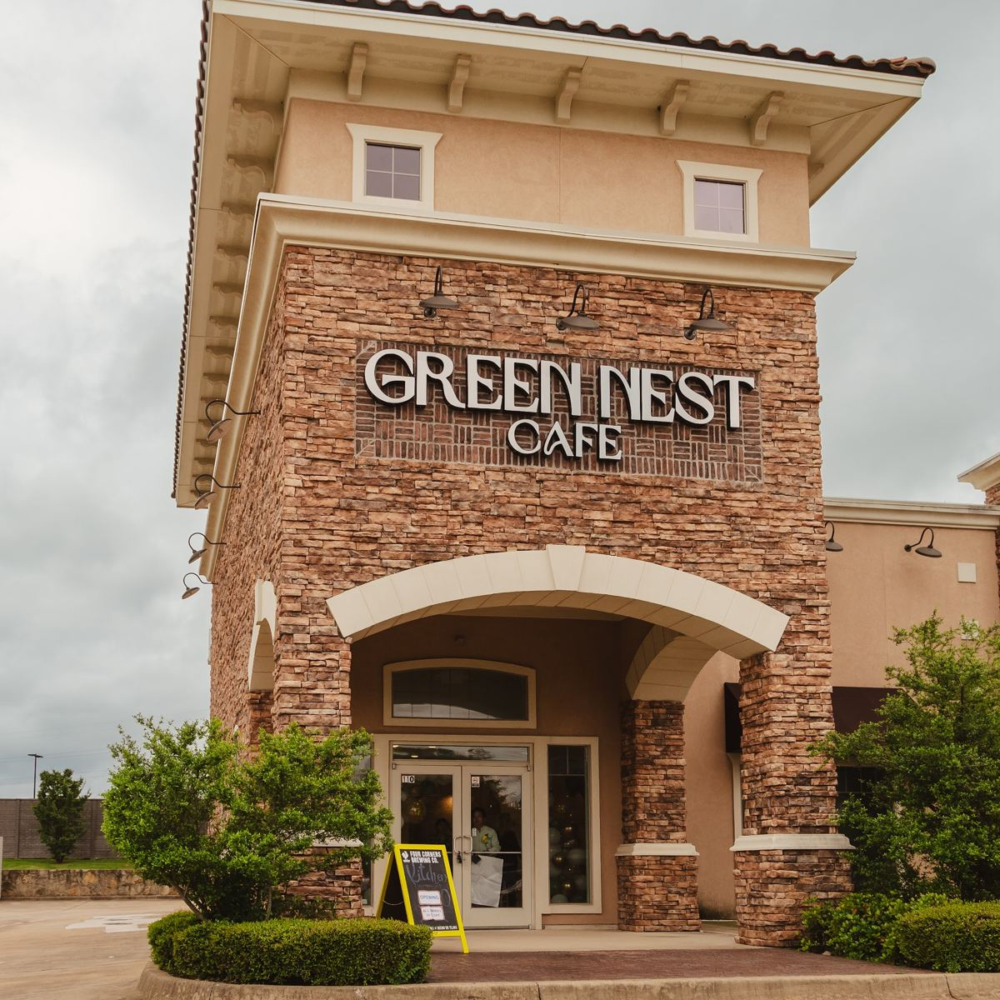
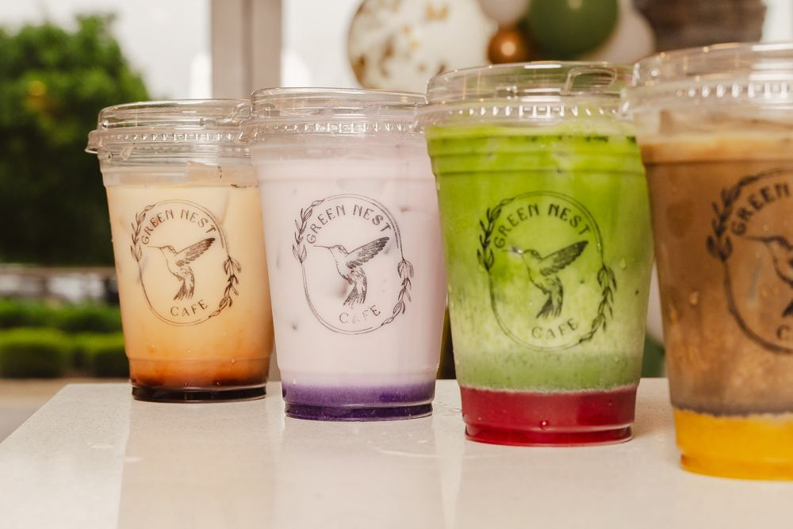
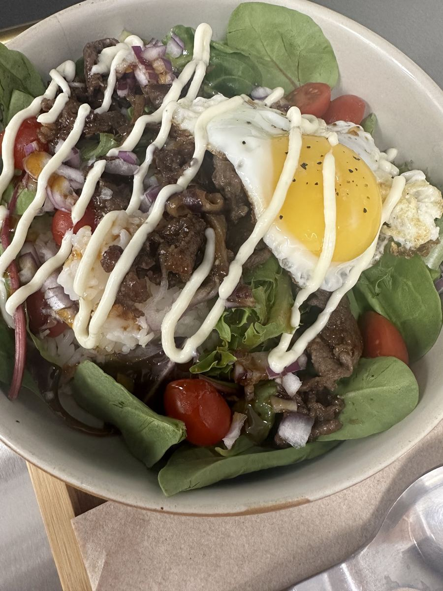
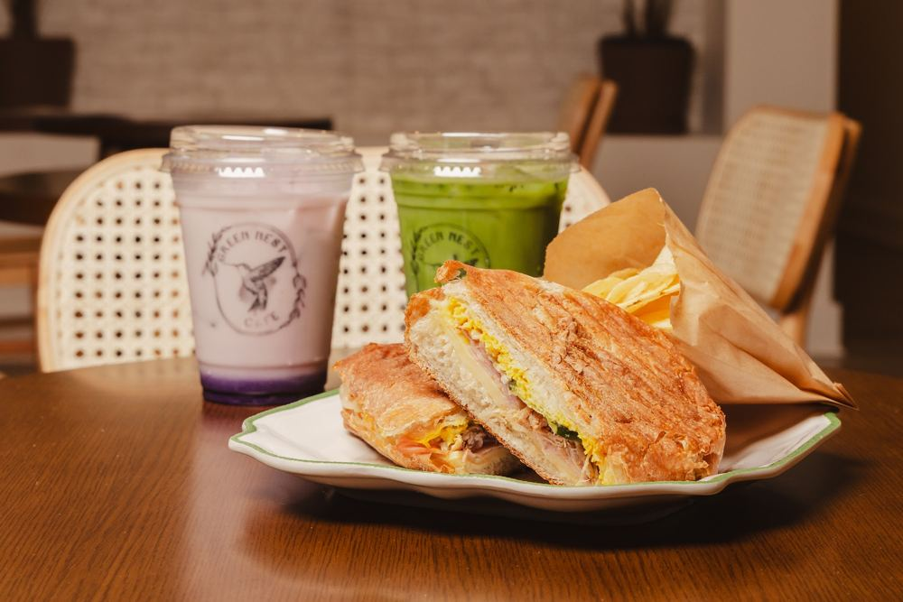
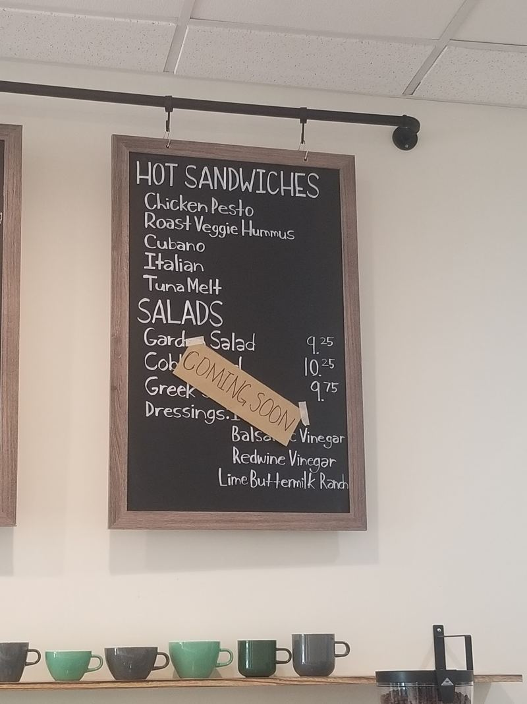
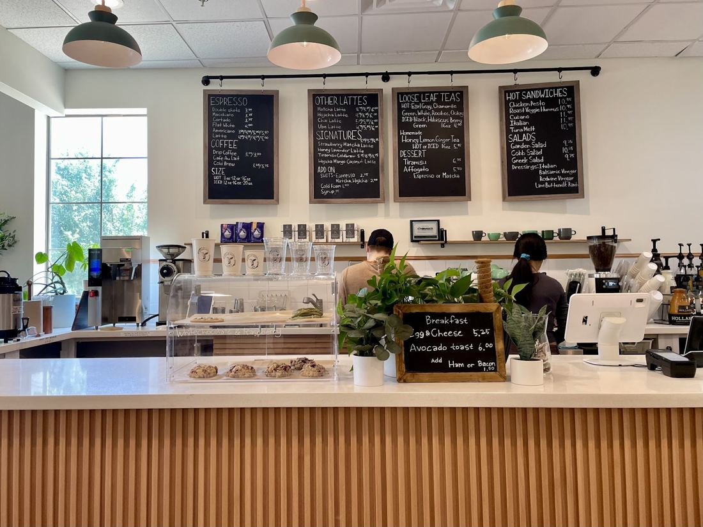

A welcoming Bedford cafe serving locally roasted coffee, sandwiches on locally baked breads, and made-from-scratch treats.
Call the cafeHours

Seasonal matcha and hojicha lattes, fresh bakes, and a weekly rotation of specials on the chalkboard.




Green Nest aspires to be your cherished neighborhood coffee spot, with a cozy room and an owner who knows her coffee. Reviewers also rave about the in-house tiramisu.
“The Korean Bulgogi Rice Bowl is unbelievable! Great service and food.”Restaurantji review
“The owner well versed in coffee and amazing!”Restaurantji review
“...had the best teas & blueberry scone. Great service & a friendly staff...”Restaurantji review
Mon–Thu 7:30 AM–5 PM
Fri–Sat 7:30 AM–8 PM
Sun 8 AM–6 PM
per public listing; confirm current hours
Takeout and dine-in available.